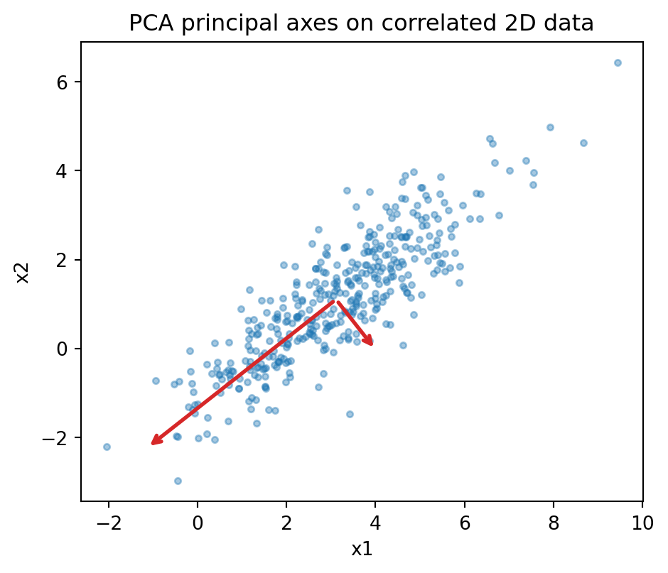

Principal Component Analysis (PCA) is the canonical method for linear dimensionality reduction. It admits several mathematically distinct yet equivalent characterizations: as the linear projection that maximizes retained variance, as the linear subspace that minimizes reconstruction error, as the eigendecomposition of an empirical covariance matrix, and as the truncated singular value decomposition of a centered data matrix. Each viewpoint illuminates a different aspect of the same underlying geometry, and each generalizes in a different direction. This chapter develops all four characterizations rigorously, proves their equivalence, and closes with the probabilistic latent variable model that recovers PCA as a maximum likelihood limit.
140.1 1. Setup and Notation
Let \(x_1, \dots, x_n \in \mathbb{R}^d\) be observations. Collect them as rows of a data matrix \(X \in \mathbb{R}^{n \times d}\). Define the empirical mean
\[
\bar{x} = \frac{1}{n} \sum_{i=1}^{n} x_i,
\]
and form the centered matrix \(\tilde{X}\) whose \(i\)th row is \(x_i - \bar{x}\). Centering is essential: PCA is a statement about second moments around the mean, not about the raw geometry of the cloud relative to the origin. The empirical covariance matrix is
Some texts use the unbiased normalization \(1/(n-1)\); the eigenvectors are unchanged because the two estimators differ by a positive scalar, so the choice affects only the scale of eigenvalues. The matrix \(S\) is symmetric and positive semidefinite, since for any \(v\) we have \(v^\top S v = \frac{1}{n}\sum_i (v^\top (x_i - \bar{x}))^2 \ge 0\). By the spectral theorem it has an orthonormal eigenbasis with nonnegative eigenvalues, a fact we will exploit repeatedly.
Throughout, a unit vector \(u \in \mathbb{R}^d\) defines a one dimensional projection \(z_i = u^\top (x_i - \bar{x})\). We seek directions \(u\), or low dimensional subspaces, that are optimal under criteria made precise below.
140.2 2. The Variance Maximization Derivation
140.2.1 2.1 The First Principal Component
The empirical variance of the projection onto a unit vector \(u\) is
\[
\widehat{\operatorname{Var}}(u) = \frac{1}{n} \sum_{i=1}^{n} \left( u^\top (x_i - \bar{x}) \right)^2 = u^\top S u.
\]
The first principal component is the direction that maximizes this quantity subject to normalization:
\[
u_1 = \arg\max_{\|u\| = 1} \; u^\top S u.
\]
Without the constraint the objective is unbounded, since scaling \(u\) scales the value quadratically. We enforce \(\|u\|^2 = 1\) and form the Lagrangian
\[
\mathcal{L}(u, \lambda) = u^\top S u - \lambda (u^\top u - 1).
\]
Setting the gradient with respect to \(u\) to zero gives the stationarity condition
\[
\nabla_u \mathcal{L} = 2 S u - 2 \lambda u = 0 \quad \Longrightarrow \quad S u = \lambda u.
\]
Stationary points are exactly the eigenvectors of \(S\), and at such a point the objective value is \(u^\top S u = \lambda u^\top u = \lambda\). To maximize variance we therefore select the eigenvector associated with the largest eigenvalue. Writing the eigenvalues in decreasing order \(\lambda_1 \ge \lambda_2 \ge \cdots \ge \lambda_d \ge 0\) with orthonormal eigenvectors \(u_1, \dots, u_d\), the first principal component is \(u_1\) and the variance it captures is \(\lambda_1\).
140.2.2 2.2 Subsequent Components and Deflation
The second principal component maximizes variance among directions orthogonal to \(u_1\):
\[
u_2 = \arg\max_{\|u\|=1,\; u \perp u_1} u^\top S u.
\]
Introducing multipliers for both the norm constraint and the orthogonality constraint, the stationarity condition again reduces to \(S u = \lambda u\), now with the additional requirement \(u^\top u_1 = 0\). Among eigenvectors orthogonal to \(u_1\), variance is maximized by \(u_2\) with eigenvalue \(\lambda_2\). Proceeding inductively, the \(k\)th principal component is the eigenvector \(u_k\), and the variance captured along it is \(\lambda_k\).
The general statement is the Courant Fischer characterization. The sum of the top \(k\) eigenvalues equals the maximum total variance captured by any \(k\) dimensional projection,
\[
\max_{U^\top U = I_k} \operatorname{tr}\!\left( U^\top S U \right) = \sum_{j=1}^{k} \lambda_j,
\]
where \(U \in \mathbb{R}^{d \times k}\) has orthonormal columns and the maximizer is the matrix of leading eigenvectors. Because \(\operatorname{tr}(S) = \sum_j \lambda_j\) equals the total variance, the fraction of variance explained by the first \(k\) components is \(\sum_{j=1}^k \lambda_j / \sum_{j=1}^d \lambda_j\), the quantity practitioners read off a scree plot.
The synthetic example below draws correlated 2D data and recovers the principal axes by eigendecomposition of the empirical covariance. The arrows are the eigenvectors scaled by their standard deviations, so the longer arrow points along the direction of maximal variance.
Eigenvalues (variances along axes): [4.683 0.339]
First principal axis: [-0.786 -0.618]

For higher dimensional data the explained variance ratios are read off a scree plot. Here the data is generated from a rank 3 latent structure plus isotropic noise, so the first three components dominate while the remaining directions carry only noise.
140.3 3. The Minimum Reconstruction Error Derivation
PCA can be derived without ever mentioning variance, by asking instead for the \(k\) dimensional affine subspace that best fits the data in the least squares sense. This dual view is often the more intuitive one and is the gateway to autoencoders and matrix factorization.
140.3.1 3.1 The Objective
Let \(U \in \mathbb{R}^{d \times k}\) have orthonormal columns spanning a candidate subspace. The orthogonal projection of a centered point onto this subspace is \(U U^\top (x_i - \bar{x})\), and the reconstruction is \(\bar{x} + U U^\top (x_i - \bar{x})\). The mean squared reconstruction error is
We minimize \(J\) over all \(U\) with \(U^\top U = I_k\). That the optimal affine subspace passes through \(\bar{x}\) can be shown by optimizing over the offset first; the gradient condition forces the offset to equal the mean, which is why centering is built in.
140.3.2 3.2 Reduction to Variance Maximization
Let \(r_i = x_i - \bar{x}\) and let \(P = U U^\top\) be the projection matrix, which satisfies \(P = P^\top\) and \(P^2 = P\). Expanding the squared norm,
\[
\| r_i - P r_i \|^2 = \| r_i \|^2 - 2 r_i^\top P r_i + r_i^\top P^\top P r_i = \| r_i \|^2 - r_i^\top P r_i,
\]
where we used \(P^\top P = P\). Summing and dividing by \(n\),
\[
J(U) = \frac{1}{n} \sum_i \| r_i \|^2 - \frac{1}{n} \sum_i r_i^\top U U^\top r_i = \operatorname{tr}(S) - \operatorname{tr}\!\left( U^\top S U \right).
\]
The first term is a constant independent of \(U\). Therefore minimizing reconstruction error is identical to maximizing \(\operatorname{tr}(U^\top S U)\), which is precisely the variance maximization problem of Section 2. The two derivations are not merely related; they are the same optimization viewed through the Pythagorean decomposition
\[
\underbrace{\| r_i \|^2}_{\text{total}} = \underbrace{\| P r_i \|^2}_{\text{captured variance}} + \underbrace{\| r_i - P r_i \|^2}_{\text{residual error}}.
\]
Maximizing the captured part and minimizing the residual part are equivalent because their sum is fixed. The optimal \(U\) is again the matrix of top \(k\) eigenvectors of \(S\), and the minimum achievable error equals the sum of the discarded eigenvalues,
\[
J^\star = \sum_{j=k+1}^{d} \lambda_j.
\]
140.4 4. Eigendecomposition of the Covariance Matrix
Both derivations converge on the same algebraic object: the eigendecomposition of \(S\). Because \(S\) is symmetric positive semidefinite, the spectral theorem guarantees
\[
S = U \Lambda U^\top, \qquad U = [u_1, \dots, u_d], \qquad \Lambda = \operatorname{diag}(\lambda_1, \dots, \lambda_d),
\]
with \(U\) orthogonal and \(\lambda_j \ge 0\). The eigenvectors \(u_j\) are the principal axes, and the eigenvalues \(\lambda_j\) are the variances along them. The PCA transform maps a centered point to its coordinates in this basis:
The resulting coordinates are decorrelated. The empirical covariance of the scores \(z_i\) is \(U_k^\top S U_k = \operatorname{diag}(\lambda_1, \dots, \lambda_k)\), a diagonal matrix, so PCA is the rotation that diagonalizes the empirical covariance. This decorrelation property is what makes PCA a whitening primitive: dividing each score by \(\sqrt{\lambda_j}\) yields unit variance, mutually uncorrelated features.
The pipeline below carries out the full transform explicitly: center, form the covariance, eigendecompose, project to \(k\) coordinates, and reconstruct. The reported scores have a diagonal empirical covariance, confirming the decorrelation property.
Score covariance (should be diagonal):
[[ 7.5687 -0. ]
[-0. 3.9713]]
Leading eigenvalues: [7.5687 3.9713]
A practical caution: forming \(S\) explicitly costs \(O(n d^2)\) and squares the condition number of \(\tilde{X}\), which can destroy precision when singular values span many orders of magnitude. The SVD route of the next section avoids ever materializing \(S\) and is the numerically preferred implementation.
140.5 5. The Singular Value Decomposition Connection
The singular value decomposition factors the centered data matrix directly:
where \(U_{\text{svd}} \in \mathbb{R}^{n \times n}\) and \(V \in \mathbb{R}^{d \times d}\) are orthogonal, and \(\Sigma \in \mathbb{R}^{n \times d}\) is diagonal with singular values \(\sigma_1 \ge \sigma_2 \ge \cdots \ge 0\). The connection to PCA follows from a single substitution:
\[
S = \frac{1}{n} \tilde{X}^\top \tilde{X} = \frac{1}{n} V \Sigma^\top U_{\text{svd}}^\top U_{\text{svd}} \Sigma V^\top = V \left( \frac{1}{n} \Sigma^\top \Sigma \right) V^\top.
\]
This is an eigendecomposition of \(S\). The right singular vectors \(V\) are the principal axes, so \(V = U\) up to sign and ordering conventions, and the eigenvalues relate to the singular values by
\[
\lambda_j = \frac{\sigma_j^2}{n}.
\]
The principal component scores have an especially clean form. Projecting the data gives
\[
Z = \tilde{X} V = U_{\text{svd}} \Sigma,
\]
so the scores are the left singular vectors scaled by the singular values. Truncating to the top \(k\) singular triplets yields
which by the Eckart Young theorem is the best rank \(k\) approximation of \(\tilde{X}\) in both the Frobenius and spectral norms. This is the deepest statement of the reconstruction view: PCA is optimal low rank matrix approximation applied to the centered data. The approximation error in Frobenius norm is \(\|\tilde{X} - \tilde{X}_k\|_F^2 = \sum_{j > k} \sigma_j^2 = n \sum_{j>k} \lambda_j\), recovering the residual variance of Section 3.
Computing the thin SVD of \(\tilde{X}\) costs \(O(\min(n d^2, n^2 d))\) and works with \(\tilde{X}\) at its native condition number, which is why robust libraries implement PCA via SVD rather than via explicit eigendecomposition of \(S\). When \(d \gg n\), the Gram matrix \(\tilde{X}\tilde{X}^\top \in \mathbb{R}^{n \times n}\) is smaller than \(S\), and one can recover \(V\) from the left side instead, a trick that underlies kernel PCA.
The cell below verifies the two routes numerically. Eigenvalues from the covariance eigendecomposition agree with \(\sigma_j^2 / n\) from the SVD to machine precision, and the empirical reconstruction error with \(k\) components equals the sum of the discarded eigenvalues, exactly the residual \(J^\star\) of Section 3.
Code
import numpy as npfrom sklearn.decomposition import PCArng = np.random.default_rng(2)X = rng.normal(size=(200, 5)) @ rng.normal(size=(5, 5))Xc = X - X.mean(axis=0)n = Xc.shape[0]# Route A: eigendecomposition of the covarianceS = (Xc.T @ Xc) / neigvals = np.sort(np.linalg.eigvalsh(S))[::-1]# Route B: SVD of centered data, lambda_j = sigma_j^2 / nsv = np.linalg.svd(Xc, compute_uv=False)lam_from_svd = sv**2/ nprint("Eigenvalues via covariance:", np.round(eigvals, 4))print("Eigenvalues via SVD: ", np.round(lam_from_svd, 4))print("Max abs difference:", np.max(np.abs(eigvals - lam_from_svd)))k =2pca = PCA(n_components=k).fit(Xc)Xr = pca.inverse_transform(pca.transform(Xc))mse = np.mean(np.sum((Xc - Xr)**2, axis=1))print("Empirical reconstruction MSE:", round(mse, 4))print("Sum of discarded eigenvalues:", round(eigvals[k:].sum(), 4))
Eigenvalues via covariance: [11.5417 8.2351 2.4714 1.0985 0.0819]
Eigenvalues via SVD: [11.5417 8.2351 2.4714 1.0985 0.0819]
Max abs difference: 1.0658141036401503e-14
Empirical reconstruction MSE: 3.6518
Sum of discarded eigenvalues: 3.6518
140.6 6. Probabilistic PCA
The derivations so far are purely geometric and make no distributional assumptions. Probabilistic PCA (PPCA), introduced by Tipping and Bishop, recasts PCA as maximum likelihood estimation in a Gaussian latent variable model. This generative formulation supplies a likelihood, a principled treatment of missing data, a route to Bayesian model selection of the latent dimension, and a mixture extension.
140.6.1 6.1 The Generative Model
Introduce a latent variable \(z \in \mathbb{R}^k\) with a standard Gaussian prior, and generate observations by a noisy linear map:
\[
z \sim \mathcal{N}(0, I_k), \qquad x \mid z \sim \mathcal{N}(W z + \mu, \, \sigma^2 I_d),
\]
with loading matrix \(W \in \mathbb{R}^{d \times k}\), mean \(\mu \in \mathbb{R}^d\), and isotropic noise variance \(\sigma^2\). The defining feature is that the noise covariance \(\sigma^2 I_d\) is spherical: every coordinate carries equal residual variance and the residuals are uncorrelated. This single restriction is what ties the model back to PCA.
140.6.2 6.2 The Marginal Distribution
Because the model is linear Gaussian, the marginal over \(x\) is Gaussian. Using \(\mathbb{E}[x] = \mu\) and propagating the latent covariance through \(W\),
\[
x \sim \mathcal{N}(\mu, \, C), \qquad C = W W^\top + \sigma^2 I_d.
\]
The observed covariance is a low rank term \(W W^\top\) of rank at most \(k\) plus isotropic noise. The log likelihood of the data set under this marginal is
where \(S\) is the sample covariance of Section 1 and \(\mu\) is estimated by the sample mean \(\bar{x}\).
140.6.3 6.3 The Maximum Likelihood Solution
Tipping and Bishop showed that the stationary points of \(\ell\) have a closed form expressed through the eigendecomposition of \(S\). Let \(S = U \Lambda U^\top\) with eigenvalues sorted in decreasing order. The maximum likelihood loading matrix is
where \(U_k\) holds the top \(k\) eigenvectors, \(\Lambda_k\) the corresponding eigenvalues, and \(R\) is an arbitrary \(k \times k\) orthogonal matrix that reflects the rotational ambiguity of the latent space. The maximum likelihood noise variance is the average of the discarded eigenvalues,
The interpretation is precise. The model devotes its \(k\) latent directions to the leading eigenvectors, exactly the principal subspace, while \(\sigma^2\) absorbs the mean residual variance left in the discarded directions, exactly the reconstruction error per dimension from Section 3. The columns of \(W_{\text{ML}}\) span the principal subspace; they are the eigenvectors stretched by \(\sqrt{\lambda_j - \sigma^2}\), the standard deviation explained by each latent direction net of noise.
140.6.4 6.4 The Zero Noise Limit
Classical PCA is recovered as \(\sigma^2 \to 0\). In that limit the columns of \(W\) reduce to the principal axes scaled by \(\sqrt{\lambda_j}\), and the posterior over latents collapses onto the orthogonal projection used in Section 3. For positive \(\sigma^2\) the posterior mean is a shrunk projection,
\[
\mathbb{E}[z \mid x] = M^{-1} W^\top (x - \mu), \qquad M = W^\top W + \sigma^2 I_k,
\]
where the \(\sigma^2 I_k\) term regularizes the inversion. Thus PPCA interpolates between hard projection and a noise aware encoder, and the deterministic PCA of the earlier sections is its limiting special case. The probabilistic view also clarifies a structural point: PCA assumes isotropic residual noise, whereas factor analysis relaxes \(\sigma^2 I_d\) to a general diagonal \(\Psi\), allowing each coordinate its own noise level and breaking the rotational tie to the eigenvectors of \(S\).
140.7 7. Summary
PCA is a single mathematical object approached from four directions. Variance maximization and minimum reconstruction error are dual halves of one optimization joined by a Pythagorean identity; both reduce to the eigendecomposition of the empirical covariance \(S\); that eigendecomposition is computed most stably as the SVD of the centered data, where the Eckart Young theorem certifies optimality of the low rank approximation; and probabilistic PCA embeds the whole construction in a Gaussian latent variable model whose maximum likelihood solution returns the principal subspace plus an isotropic noise term, with deterministic PCA as the zero noise limit. The equivalences are exact, and each formulation hands the practitioner a different generalization: kernel methods from the Gram matrix view, robust and sparse variants from the optimization view, and Bayesian dimensionality selection and missing data handling from the probabilistic view.
140.8 References
Pearson, K. (1901). On lines and planes of closest fit to systems of points in space. Philosophical Magazine, 2(11), 559 to 572. https://doi.org/10.1080/14786440109462720
Hotelling, H. (1933). Analysis of a complex of statistical variables into principal components. Journal of Educational Psychology, 24(6), 417 to 441. https://doi.org/10.1037/h0071325
Jolliffe, I. T. (2002). Principal Component Analysis (2nd ed.). Springer. https://doi.org/10.1007/b98835
Tipping, M. E., and Bishop, C. M. (1999). Probabilistic principal component analysis. Journal of the Royal Statistical Society: Series B, 61(3), 611 to 622. https://doi.org/10.1111/1467-9868.00196
Bishop, C. M. (2006). Pattern Recognition and Machine Learning. Springer. https://www.microsoft.com/en-us/research/publication/pattern-recognition-machine-learning/
Eckart, C., and Young, G. (1936). The approximation of one matrix by another of lower rank. Psychometrika, 1(3), 211 to 218. https://doi.org/10.1007/BF02288367
Golub, G. H., and Van Loan, C. F. (2013). Matrix Computations (4th ed.). Johns Hopkins University Press. https://jhupbooks.press.jhu.edu/title/matrix-computations
Shlens, J. (2014). A tutorial on principal component analysis. arXiv preprint. https://arxiv.org/abs/1404.1100
Source Code
# Principal Component Analysis: TheoryPrincipal Component Analysis (PCA) is the canonical method for linear dimensionality reduction. It admits several mathematically distinct yet equivalent characterizations: as the linear projection that maximizes retained variance, as the linear subspace that minimizes reconstruction error, as the eigendecomposition of an empirical covariance matrix, and as the truncated singular value decomposition of a centered data matrix. Each viewpoint illuminates a different aspect of the same underlying geometry, and each generalizes in a different direction. This chapter develops all four characterizations rigorously, proves their equivalence, and closes with the probabilistic latent variable model that recovers PCA as a maximum likelihood limit.## 1. Setup and NotationLet $x_1, \dots, x_n \in \mathbb{R}^d$ be observations. Collect them as rows of a data matrix $X \in \mathbb{R}^{n \times d}$. Define the empirical mean$$\bar{x} = \frac{1}{n} \sum_{i=1}^{n} x_i,$$and form the centered matrix $\tilde{X}$ whose $i$th row is $x_i - \bar{x}$. Centering is essential: PCA is a statement about second moments around the mean, not about the raw geometry of the cloud relative to the origin. The empirical covariance matrix is$$S = \frac{1}{n} \tilde{X}^\top \tilde{X} = \frac{1}{n} \sum_{i=1}^{n} (x_i - \bar{x})(x_i - \bar{x})^\top \in \mathbb{R}^{d \times d}.$$Some texts use the unbiased normalization $1/(n-1)$; the eigenvectors are unchanged because the two estimators differ by a positive scalar, so the choice affects only the scale of eigenvalues. The matrix $S$ is symmetric and positive semidefinite, since for any $v$ we have $v^\top S v = \frac{1}{n}\sum_i (v^\top (x_i - \bar{x}))^2 \ge 0$. By the spectral theorem it has an orthonormal eigenbasis with nonnegative eigenvalues, a fact we will exploit repeatedly.Throughout, a unit vector $u \in \mathbb{R}^d$ defines a one dimensional projection $z_i = u^\top (x_i - \bar{x})$. We seek directions $u$, or low dimensional subspaces, that are optimal under criteria made precise below.## 2. The Variance Maximization Derivation### 2.1 The First Principal ComponentThe empirical variance of the projection onto a unit vector $u$ is$$\widehat{\operatorname{Var}}(u) = \frac{1}{n} \sum_{i=1}^{n} \left( u^\top (x_i - \bar{x}) \right)^2 = u^\top S u.$$The first principal component is the direction that maximizes this quantity subject to normalization:$$u_1 = \arg\max_{\|u\| = 1} \; u^\top S u.$$Without the constraint the objective is unbounded, since scaling $u$ scales the value quadratically. We enforce $\|u\|^2 = 1$ and form the Lagrangian$$\mathcal{L}(u, \lambda) = u^\top S u - \lambda (u^\top u - 1).$$Setting the gradient with respect to $u$ to zero gives the stationarity condition$$\nabla_u \mathcal{L} = 2 S u - 2 \lambda u = 0 \quad \Longrightarrow \quad S u = \lambda u.$$Stationary points are exactly the eigenvectors of $S$, and at such a point the objective value is $u^\top S u = \lambda u^\top u = \lambda$. To maximize variance we therefore select the eigenvector associated with the largest eigenvalue. Writing the eigenvalues in decreasing order $\lambda_1 \ge \lambda_2 \ge \cdots \ge \lambda_d \ge 0$ with orthonormal eigenvectors $u_1, \dots, u_d$, the first principal component is $u_1$ and the variance it captures is $\lambda_1$.### 2.2 Subsequent Components and DeflationThe second principal component maximizes variance among directions orthogonal to $u_1$:$$u_2 = \arg\max_{\|u\|=1,\; u \perp u_1} u^\top S u.$$Introducing multipliers for both the norm constraint and the orthogonality constraint, the stationarity condition again reduces to $S u = \lambda u$, now with the additional requirement $u^\top u_1 = 0$. Among eigenvectors orthogonal to $u_1$, variance is maximized by $u_2$ with eigenvalue $\lambda_2$. Proceeding inductively, the $k$th principal component is the eigenvector $u_k$, and the variance captured along it is $\lambda_k$.The general statement is the Courant Fischer characterization. The sum of the top $k$ eigenvalues equals the maximum total variance captured by any $k$ dimensional projection,$$\max_{U^\top U = I_k} \operatorname{tr}\!\left( U^\top S U \right) = \sum_{j=1}^{k} \lambda_j,$$where $U \in \mathbb{R}^{d \times k}$ has orthonormal columns and the maximizer is the matrix of leading eigenvectors. Because $\operatorname{tr}(S) = \sum_j \lambda_j$ equals the total variance, the fraction of variance explained by the first $k$ components is $\sum_{j=1}^k \lambda_j / \sum_{j=1}^d \lambda_j$, the quantity practitioners read off a scree plot.The synthetic example below draws correlated 2D data and recovers the principal axes by eigendecomposition of the empirical covariance. The arrows are the eigenvectors scaled by their standard deviations, so the longer arrow points along the direction of maximal variance.```{python}import numpy as npimport matplotlib.pyplot as pltrng = np.random.default_rng(0)mean = np.array([3.0, 1.0])cov = np.array([[3.0, 2.1], [2.1, 2.0]])X = rng.multivariate_normal(mean, cov, size=400)Xc = X - X.mean(axis=0)S = (Xc.T @ Xc) / Xc.shape[0]eigvals, eigvecs = np.linalg.eigh(S)order = np.argsort(eigvals)[::-1]eigvals, eigvecs = eigvals[order], eigvecs[:, order]print("Eigenvalues (variances along axes):", np.round(eigvals, 3))print("First principal axis:", np.round(eigvecs[:, 0], 3))fig, ax = plt.subplots(figsize=(5, 5))ax.scatter(X[:, 0], X[:, 1], s=10, alpha=0.4)center = X.mean(axis=0)for j inrange(2): vec = eigvecs[:, j] * np.sqrt(eigvals[j]) *2.5 ax.annotate("", xy=center + vec, xytext=center, arrowprops=dict(arrowstyle="->", linewidth=2, color="C3"))ax.set_aspect("equal")ax.set_title("PCA principal axes on correlated 2D data")ax.set_xlabel("x1")ax.set_ylabel("x2")plt.tight_layout()plt.show()```For higher dimensional data the explained variance ratios are read off a scree plot. Here the data is generated from a rank 3 latent structure plus isotropic noise, so the first three components dominate while the remaining directions carry only noise.```{python}import numpy as npimport matplotlib.pyplot as pltfrom sklearn.decomposition import PCArng = np.random.default_rng(1)n, d, k =500, 8, 3W = rng.normal(size=(d, k))Z = rng.normal(size=(n, k))X = Z @ W.T +0.4* rng.normal(size=(n, d))pca = PCA().fit(X)ratio = pca.explained_variance_ratio_cum = np.cumsum(ratio)print("Explained variance ratio:", np.round(ratio, 3))print("Cumulative:", np.round(cum, 3))fig, ax = plt.subplots(figsize=(6, 4))comps = np.arange(1, d +1)ax.bar(comps, ratio, alpha=0.6, label="individual")ax.plot(comps, cum, "o-", color="C3", label="cumulative")ax.set_xlabel("Principal component")ax.set_ylabel("Fraction of variance")ax.set_title("Scree plot: explained variance")ax.legend()plt.tight_layout()plt.show()```## 3. The Minimum Reconstruction Error DerivationPCA can be derived without ever mentioning variance, by asking instead for the $k$ dimensional affine subspace that best fits the data in the least squares sense. This dual view is often the more intuitive one and is the gateway to autoencoders and matrix factorization.### 3.1 The ObjectiveLet $U \in \mathbb{R}^{d \times k}$ have orthonormal columns spanning a candidate subspace. The orthogonal projection of a centered point onto this subspace is $U U^\top (x_i - \bar{x})$, and the reconstruction is $\bar{x} + U U^\top (x_i - \bar{x})$. The mean squared reconstruction error is$$J(U) = \frac{1}{n} \sum_{i=1}^{n} \left\| (x_i - \bar{x}) - U U^\top (x_i - \bar{x}) \right\|^2.$$We minimize $J$ over all $U$ with $U^\top U = I_k$. That the optimal affine subspace passes through $\bar{x}$ can be shown by optimizing over the offset first; the gradient condition forces the offset to equal the mean, which is why centering is built in.### 3.2 Reduction to Variance MaximizationLet $r_i = x_i - \bar{x}$ and let $P = U U^\top$ be the projection matrix, which satisfies $P = P^\top$ and $P^2 = P$. Expanding the squared norm,$$\| r_i - P r_i \|^2 = \| r_i \|^2 - 2 r_i^\top P r_i + r_i^\top P^\top P r_i = \| r_i \|^2 - r_i^\top P r_i,$$where we used $P^\top P = P$. Summing and dividing by $n$,$$J(U) = \frac{1}{n} \sum_i \| r_i \|^2 - \frac{1}{n} \sum_i r_i^\top U U^\top r_i = \operatorname{tr}(S) - \operatorname{tr}\!\left( U^\top S U \right).$$The first term is a constant independent of $U$. Therefore minimizing reconstruction error is identical to maximizing $\operatorname{tr}(U^\top S U)$, which is precisely the variance maximization problem of Section 2. The two derivations are not merely related; they are the same optimization viewed through the Pythagorean decomposition$$\underbrace{\| r_i \|^2}_{\text{total}} = \underbrace{\| P r_i \|^2}_{\text{captured variance}} + \underbrace{\| r_i - P r_i \|^2}_{\text{residual error}}.$$Maximizing the captured part and minimizing the residual part are equivalent because their sum is fixed. The optimal $U$ is again the matrix of top $k$ eigenvectors of $S$, and the minimum achievable error equals the sum of the discarded eigenvalues,$$J^\star = \sum_{j=k+1}^{d} \lambda_j.$$## 4. Eigendecomposition of the Covariance MatrixBoth derivations converge on the same algebraic object: the eigendecomposition of $S$. Because $S$ is symmetric positive semidefinite, the spectral theorem guarantees$$S = U \Lambda U^\top, \qquad U = [u_1, \dots, u_d], \qquad \Lambda = \operatorname{diag}(\lambda_1, \dots, \lambda_d),$$with $U$ orthogonal and $\lambda_j \ge 0$. The eigenvectors $u_j$ are the principal axes, and the eigenvalues $\lambda_j$ are the variances along them. The PCA transform maps a centered point to its coordinates in this basis:$$z_i = U_k^\top (x_i - \bar{x}), \qquad U_k = [u_1, \dots, u_k] \in \mathbb{R}^{d \times k}.$$The resulting coordinates are decorrelated. The empirical covariance of the scores $z_i$ is $U_k^\top S U_k = \operatorname{diag}(\lambda_1, \dots, \lambda_k)$, a diagonal matrix, so PCA is the rotation that diagonalizes the empirical covariance. This decorrelation property is what makes PCA a whitening primitive: dividing each score by $\sqrt{\lambda_j}$ yields unit variance, mutually uncorrelated features.The pipeline below carries out the full transform explicitly: center, form the covariance, eigendecompose, project to $k$ coordinates, and reconstruct. The reported scores have a diagonal empirical covariance, confirming the decorrelation property.```{python}import numpy as nprng = np.random.default_rng(3)X = rng.normal(size=(300, 4)) @ rng.normal(size=(4, 4))mu = X.mean(axis=0)Xc = X - mun = Xc.shape[0]S = (Xc.T @ Xc) / neigvals, eigvecs = np.linalg.eigh(S)order = np.argsort(eigvals)[::-1]eigvals, eigvecs = eigvals[order], eigvecs[:, order]k =2Uk = eigvecs[:, :k]Z = Xc @ UkXr = mu + Z @ Uk.Tscore_cov = (Z.T @ Z) / nprint("Score covariance (should be diagonal):")print(np.round(score_cov, 4))print("Leading eigenvalues:", np.round(eigvals[:k], 4))```A practical caution: forming $S$ explicitly costs $O(n d^2)$ and squares the condition number of $\tilde{X}$, which can destroy precision when singular values span many orders of magnitude. The SVD route of the next section avoids ever materializing $S$ and is the numerically preferred implementation.## 5. The Singular Value Decomposition ConnectionThe singular value decomposition factors the centered data matrix directly:$$\tilde{X} = U_{\text{svd}} \, \Sigma \, V^\top,$$where $U_{\text{svd}} \in \mathbb{R}^{n \times n}$ and $V \in \mathbb{R}^{d \times d}$ are orthogonal, and $\Sigma \in \mathbb{R}^{n \times d}$ is diagonal with singular values $\sigma_1 \ge \sigma_2 \ge \cdots \ge 0$. The connection to PCA follows from a single substitution:$$S = \frac{1}{n} \tilde{X}^\top \tilde{X} = \frac{1}{n} V \Sigma^\top U_{\text{svd}}^\top U_{\text{svd}} \Sigma V^\top = V \left( \frac{1}{n} \Sigma^\top \Sigma \right) V^\top.$$This is an eigendecomposition of $S$. The right singular vectors $V$ are the principal axes, so $V = U$ up to sign and ordering conventions, and the eigenvalues relate to the singular values by$$\lambda_j = \frac{\sigma_j^2}{n}.$$The principal component scores have an especially clean form. Projecting the data gives$$Z = \tilde{X} V = U_{\text{svd}} \Sigma,$$so the scores are the left singular vectors scaled by the singular values. Truncating to the top $k$ singular triplets yields$$\tilde{X}_k = U_{\text{svd},k} \, \Sigma_k \, V_k^\top,$$which by the Eckart Young theorem is the best rank $k$ approximation of $\tilde{X}$ in both the Frobenius and spectral norms. This is the deepest statement of the reconstruction view: PCA is optimal low rank matrix approximation applied to the centered data. The approximation error in Frobenius norm is $\|\tilde{X} - \tilde{X}_k\|_F^2 = \sum_{j > k} \sigma_j^2 = n \sum_{j>k} \lambda_j$, recovering the residual variance of Section 3.Computing the thin SVD of $\tilde{X}$ costs $O(\min(n d^2, n^2 d))$ and works with $\tilde{X}$ at its native condition number, which is why robust libraries implement PCA via SVD rather than via explicit eigendecomposition of $S$. When $d \gg n$, the Gram matrix $\tilde{X}\tilde{X}^\top \in \mathbb{R}^{n \times n}$ is smaller than $S$, and one can recover $V$ from the left side instead, a trick that underlies kernel PCA.The cell below verifies the two routes numerically. Eigenvalues from the covariance eigendecomposition agree with $\sigma_j^2 / n$ from the SVD to machine precision, and the empirical reconstruction error with $k$ components equals the sum of the discarded eigenvalues, exactly the residual $J^\star$ of Section 3.```{python}import numpy as npfrom sklearn.decomposition import PCArng = np.random.default_rng(2)X = rng.normal(size=(200, 5)) @ rng.normal(size=(5, 5))Xc = X - X.mean(axis=0)n = Xc.shape[0]# Route A: eigendecomposition of the covarianceS = (Xc.T @ Xc) / neigvals = np.sort(np.linalg.eigvalsh(S))[::-1]# Route B: SVD of centered data, lambda_j = sigma_j^2 / nsv = np.linalg.svd(Xc, compute_uv=False)lam_from_svd = sv**2/ nprint("Eigenvalues via covariance:", np.round(eigvals, 4))print("Eigenvalues via SVD: ", np.round(lam_from_svd, 4))print("Max abs difference:", np.max(np.abs(eigvals - lam_from_svd)))k =2pca = PCA(n_components=k).fit(Xc)Xr = pca.inverse_transform(pca.transform(Xc))mse = np.mean(np.sum((Xc - Xr)**2, axis=1))print("Empirical reconstruction MSE:", round(mse, 4))print("Sum of discarded eigenvalues:", round(eigvals[k:].sum(), 4))```## 6. Probabilistic PCAThe derivations so far are purely geometric and make no distributional assumptions. Probabilistic PCA (PPCA), introduced by Tipping and Bishop, recasts PCA as maximum likelihood estimation in a Gaussian latent variable model. This generative formulation supplies a likelihood, a principled treatment of missing data, a route to Bayesian model selection of the latent dimension, and a mixture extension.### 6.1 The Generative ModelIntroduce a latent variable $z \in \mathbb{R}^k$ with a standard Gaussian prior, and generate observations by a noisy linear map:$$z \sim \mathcal{N}(0, I_k), \qquad x \mid z \sim \mathcal{N}(W z + \mu, \, \sigma^2 I_d),$$with loading matrix $W \in \mathbb{R}^{d \times k}$, mean $\mu \in \mathbb{R}^d$, and isotropic noise variance $\sigma^2$. The defining feature is that the noise covariance $\sigma^2 I_d$ is spherical: every coordinate carries equal residual variance and the residuals are uncorrelated. This single restriction is what ties the model back to PCA.### 6.2 The Marginal DistributionBecause the model is linear Gaussian, the marginal over $x$ is Gaussian. Using $\mathbb{E}[x] = \mu$ and propagating the latent covariance through $W$,$$x \sim \mathcal{N}(\mu, \, C), \qquad C = W W^\top + \sigma^2 I_d.$$The observed covariance is a low rank term $W W^\top$ of rank at most $k$ plus isotropic noise. The log likelihood of the data set under this marginal is$$\ell(W, \mu, \sigma^2) = -\frac{n}{2}\left[ d \log(2\pi) + \log |C| + \operatorname{tr}(C^{-1} S) \right],$$where $S$ is the sample covariance of Section 1 and $\mu$ is estimated by the sample mean $\bar{x}$.### 6.3 The Maximum Likelihood SolutionTipping and Bishop showed that the stationary points of $\ell$ have a closed form expressed through the eigendecomposition of $S$. Let $S = U \Lambda U^\top$ with eigenvalues sorted in decreasing order. The maximum likelihood loading matrix is$$W_{\text{ML}} = U_k \left( \Lambda_k - \sigma^2 I_k \right)^{1/2} R,$$where $U_k$ holds the top $k$ eigenvectors, $\Lambda_k$ the corresponding eigenvalues, and $R$ is an arbitrary $k \times k$ orthogonal matrix that reflects the rotational ambiguity of the latent space. The maximum likelihood noise variance is the average of the discarded eigenvalues,$$\sigma^2_{\text{ML}} = \frac{1}{d - k} \sum_{j = k+1}^{d} \lambda_j.$$The interpretation is precise. The model devotes its $k$ latent directions to the leading eigenvectors, exactly the principal subspace, while $\sigma^2$ absorbs the mean residual variance left in the discarded directions, exactly the reconstruction error per dimension from Section 3. The columns of $W_{\text{ML}}$ span the principal subspace; they are the eigenvectors stretched by $\sqrt{\lambda_j - \sigma^2}$, the standard deviation explained by each latent direction net of noise.### 6.4 The Zero Noise LimitClassical PCA is recovered as $\sigma^2 \to 0$. In that limit the columns of $W$ reduce to the principal axes scaled by $\sqrt{\lambda_j}$, and the posterior over latents collapses onto the orthogonal projection used in Section 3. For positive $\sigma^2$ the posterior mean is a shrunk projection,$$\mathbb{E}[z \mid x] = M^{-1} W^\top (x - \mu), \qquad M = W^\top W + \sigma^2 I_k,$$where the $\sigma^2 I_k$ term regularizes the inversion. Thus PPCA interpolates between hard projection and a noise aware encoder, and the deterministic PCA of the earlier sections is its limiting special case. The probabilistic view also clarifies a structural point: PCA assumes isotropic residual noise, whereas factor analysis relaxes $\sigma^2 I_d$ to a general diagonal $\Psi$, allowing each coordinate its own noise level and breaking the rotational tie to the eigenvectors of $S$.## 7. SummaryPCA is a single mathematical object approached from four directions. Variance maximization and minimum reconstruction error are dual halves of one optimization joined by a Pythagorean identity; both reduce to the eigendecomposition of the empirical covariance $S$; that eigendecomposition is computed most stably as the SVD of the centered data, where the Eckart Young theorem certifies optimality of the low rank approximation; and probabilistic PCA embeds the whole construction in a Gaussian latent variable model whose maximum likelihood solution returns the principal subspace plus an isotropic noise term, with deterministic PCA as the zero noise limit. The equivalences are exact, and each formulation hands the practitioner a different generalization: kernel methods from the Gram matrix view, robust and sparse variants from the optimization view, and Bayesian dimensionality selection and missing data handling from the probabilistic view.## References1. Pearson, K. (1901). On lines and planes of closest fit to systems of points in space. Philosophical Magazine, 2(11), 559 to 572. https://doi.org/10.1080/147864401094627202. Hotelling, H. (1933). Analysis of a complex of statistical variables into principal components. Journal of Educational Psychology, 24(6), 417 to 441. https://doi.org/10.1037/h00713253. Jolliffe, I. T. (2002). Principal Component Analysis (2nd ed.). Springer. https://doi.org/10.1007/b988354. Tipping, M. E., and Bishop, C. M. (1999). Probabilistic principal component analysis. Journal of the Royal Statistical Society: Series B, 61(3), 611 to 622. https://doi.org/10.1111/1467-9868.001965. Bishop, C. M. (2006). Pattern Recognition and Machine Learning. Springer. https://www.microsoft.com/en-us/research/publication/pattern-recognition-machine-learning/6. Eckart, C., and Young, G. (1936). The approximation of one matrix by another of lower rank. Psychometrika, 1(3), 211 to 218. https://doi.org/10.1007/BF022883677. Golub, G. H., and Van Loan, C. F. (2013). Matrix Computations (4th ed.). Johns Hopkins University Press. https://jhupbooks.press.jhu.edu/title/matrix-computations8. Shlens, J. (2014). A tutorial on principal component analysis. arXiv preprint. https://arxiv.org/abs/1404.1100